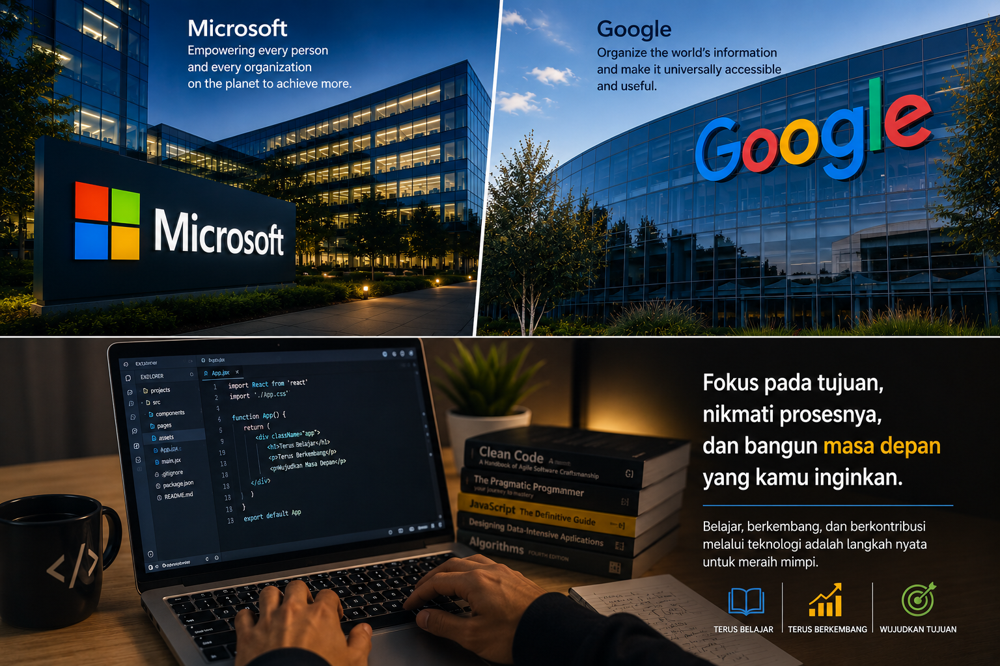

Masa Depan
Masa Depan yang Ingin Saya Capai
Tentang mimpi dan tujuan saya untuk terus berkembang di dunia teknologi dan komputer.

Ketertarikan saya terhadap dunia komputer membuat saya ingin terus belajar dan berkembang di bidang teknologi.
Di masa depan saya memiliki keinginan untuk bekerja di perusahaan teknologi besar seperti Google atau Microsoft. Saya ingin melanjutkan passion saya di dunia komputer dan menjadi seseorang yang dapat berkembang bersama teknologi.

Bagi saya, dunia teknologi bukan hanya tentang pekerjaan, tetapi juga tentang bagaimana saya bisa terus belajar, menciptakan sesuatu, dan memberikan manfaat melalui kemampuan yang saya miliki.
Saya sadar bahwa semua membutuhkan proses, pengalaman, dan kerja keras. Karena itu saya ingin terus meningkatkan kemampuan, memperluas pengetahuan, dan tetap konsisten dalam belajar.
“Mimpi besar dimulai dari langkah kecil yang terus berjalan.”